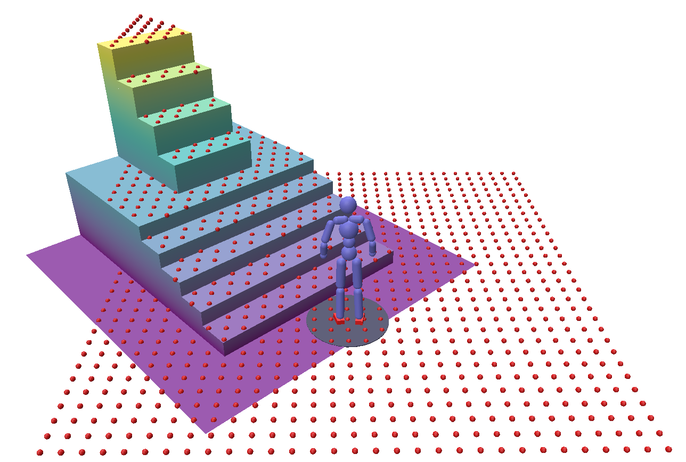

PARC: Terrain Generation
May 1, 2025.
My first paper has been accepted to SIGGRAPH 2025. It describes an AI autophagy method for automatically augmenting a dataset while continually training both a motion generation model and motion tracking controller. Read more about PARC here!
In this blog post, I want to describe the details regarding terrain. Representation, generation, and augmentation.

My first paper has been accepted to SIGGRAPH 2025. It describes an AI autophagy method for automatically augmenting a dataset while continually training both a motion generation model and motion tracking controller. Read more about PARC here!
In this blog post, I want to describe the details regarding terrain. Representation, generation, and augmentation.
Terrain Representation
Terrain Generation
In order to expand our dataset, we need to apply our motion generator to traverse out of distribution terrains.Terrain Augmentation
To improve the diversity of terrain observations when training the motion generator, we use a terrain augmentation strategy. compute hf max and min bounds using original terrain and motion.